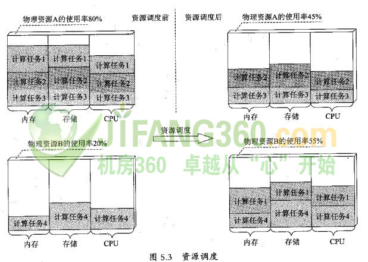

资源调度是指在特定的资源环境下，根据一定的资源使用规则，在不同的资源使用者之间进行资源调整的过程。 这些资源使用者对应着不同的计算任务(例如一个虚拟解决方案)，每个计算任务存操作系统中对应于一个或者多个进程。 通常有两种途径可以实现计算任务的资源调度:在计算任务所在的机器上调整分配给它的资源使用量，或者将计算任务转移到其他机器上。 图5.3是将计算任务迁移到其他机器上的一个例子。在这个例子中，物理资源A(如一台物理服务器)的使用率远高于物理资源趴B， 通过将计算任务1从物理资源A迁移到物理资源B，使得资源的使用更加均衡和合理，从而达到负载均衡的目的。

虚拟机的出现使得所有的计算任务都被封装在一个虚拟机内部。 由于虚拟机具有隔离特性，因此可以采用虚拟机的动态迁移方案来达到计算任务迁移的目的。 目前的技术已经实现了在几秒钟内将一个虚拟机实例从一台物理机迁移至另一台物理机，其间只需毫秒级别的停机时间， 从而实现计算任务在不同物理机器之间的迁移。
云计算的海量规模为资源调度带来了新的挑战。下面分别讲述。
首先，由于云计算环境中虚拟机的数量可能会很多，动态迁移在大规模环境下会遇到一些问题。 第一，动态迁移要求迁移虚拟机的双方物理机共享使用一个存储服务，当虚拟机数量非常多时，存储服务可能会成为性能瓶颈，甚至无法提供服务。 在这种场景下，需要动态迁移能够支持迁移双方分别使用自己的存储服务的场景。目前比较成熟的技术是VMware的Storage vMotion技术， 它可以支持动态迁移时实现虚拟机镜像文件在不同存储服务之间的迁移。第二，当虚拟机迁移时，其网络配置是不变的， 而在云计算环境中，网络配置需要灵活地进行调整，目前VMware已经意识到了这个问题，并在最新的vMotion中提供了对网络配置修改的支持。 第三，目前动态迁移限制迁移的双方物理机处于同一个广播域内。在云计算环境中，虚拟机的数量非常大时，可能导致广播域无法给所有的虚拟机分配地址。 针对这个问题，VMware推出了vNetwork Distributed Switch技术，将多个广播域整合成一个虚拟的广播域，并维护所有虚拟机的地址。 但这样的场景下还会有新的问题，比如广播风暴、安全问题等等，目前业界还在努力解决这些问题。
其次，资源调度需要考虑到资源的实时使用情况，这就要求对云计算环境的资源进行实时监控和管理。 云计算环境中资源的种类多、规模大，对资源的实时监控和管理就变得十分困难。 在这方面，主要依赖于云计算平台层的技术提供者能够提供详尽的资源使用情况数据。此外，一个云计算环境可能有成千上万的计算任务， 这对调度算法的复杂性和有效性提出了挑战，调度算法必须在精确性和速度之间寻找一个平衡点，或者提供给用户多种选择，是偏重精确性还是速度。 对于基于虚拟化技术的云基础设施层，虚拟机的大小一般都在几个GB以上，大规模并行的虚拟机迁移操作很有可能会因为网络带宽等各因素的限制而变得非常缓慢。
最后，从调度的粒度来看，虚拟机内部应用的调度才是云计算用户更加关心的。 如何调度资源满足虚拟机内部应用的服务级别协定也是目前待解的一个难题。 以性能为例，一个应用资源调度系统需要监控应用的实时性能指标，例如吞吐量、响应时间等。 通过这些性能指标，结合历史记录及预测模型，分析出未来可能的性能值，并与用户预先制定的性能目标进行比较，得出应用是否需要及如何进行资源调整的结论。 目前，大多数虚拟化管理方案只能通过在虚拟机级别上的调度技术结合一定的调度策略来尝试为虚拟机内部应用做资源调度，普遍缺乏精确性和有效性。 为了能够根据虚拟机内部应用的需求进行资源调度，需要能够有一套对于虚拟机内部应用的形式化记录方式， 第3章中提到的:“OVF”可以在一定程度上作为这个记录方式;另外，需要一套形式化的方法能够将应用的服务级别协定映射为一组资源调度的需求或者规则， 这样，资源调度程序才能实现针对虚拟机内部应用需求的资源调度。